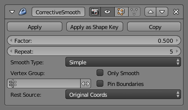

Corrective Smooth Modifier¶
Цей модифікатор використовується для зменшення високо спотворених ділянок сіті шляхом згладження деформацій.
Це, зазвичай, корисно після модифікатора Armature, де спотворення навколо суглобів важко уникати, навіть за допомогою ретельного малювання вагомостей.
Для ефективного використання цього модифікатора корисно розуміти основу його роботи.
- Стан Спокою -- Rest State
- Використовується як орієнтир для визначення високо спотворених областей. Стандартно використовуються оригінальні локації вершин.
- Згладження -- Smoothing
- Багато опцій цього модифікатора стосуються згладжування, яке використовується внутрішньо для виправлення спотворених регіонів.
Опції¶

Модифікатор «Виправне Згладження» -- Corrective Smooth.
The modifier also uses a Rest state, to use as a reference. Internally this modifier uses smoothing, so some of the options adjust the kind of smoothing.
- Фактор -- Factor
- Фактор для керування величиною згладження. Вищі значення збільшуватимуть ефект модифікатора. Значення поза цим діапазоном (понад 1.0 або нижче 0.0) спотворюють сіть.
- Повтор -- Repeat
- Кількість повторів згладжування. Вищі значення загалом покращують якість згладження, але дають уповільнення цієї операції.
- Тип Згладження -- Smooth Type
Дає змогу вибрати використовуваний метод згладження.
- Просто -- Simple
- Це просто розслаблює вершини до з'єднаних з ними ребер.
- Вагомість Довжини -- Length Weight
- Використовує метод розслаблення, що виважує за відстанню до навколишніх вершин. Ця опція може давати вищу якість згладження у деяких випадках шляхом кращого збереження обрису оригінальної форми.
- Група Вершин -- Vertex Group
- Використовується для ручного вибору регіонів для згладження.
- Лише Згладження -- Only Smooth
- Ця опція включена для передогляду використовуваного згладження перед застосуванням виправлення.
- Пришпилити Рубежі -- Pin Boundaries
- Запобігає згладженню рубіжних вершин.
- Джерело Спокою -- Rest Source
Дає змогу вибрати джерело для орієнтирних позицій вершин, що визначає недеформований стан.
- Оригінальні Координати -- Original Coordinates
- Використовує оригінальні увідні позиції вершин. Це залежить від оригінальної сіті, що має таку ж кількість вершин, як і оригінальна сіть.
- Координати Прив'язки -- Bind Coordinates
- Факультативно ви можете прив'язати модифікатор до певного стану. Це вимагає, щоб наявні конструктивні модифікатори, такі як Subdivision Surface або Mirror, були застосовані перед цим модифікатором у стеку.